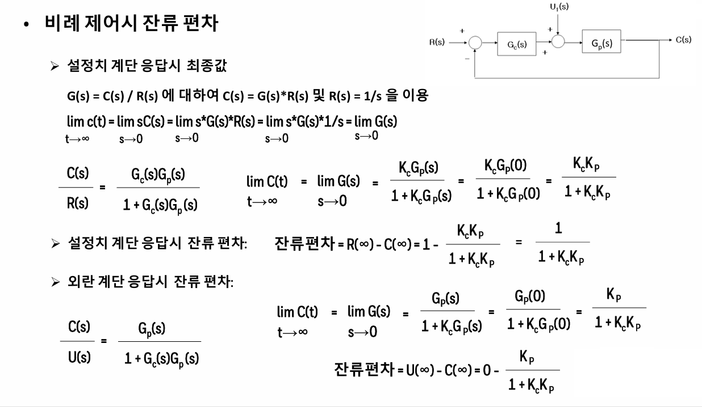
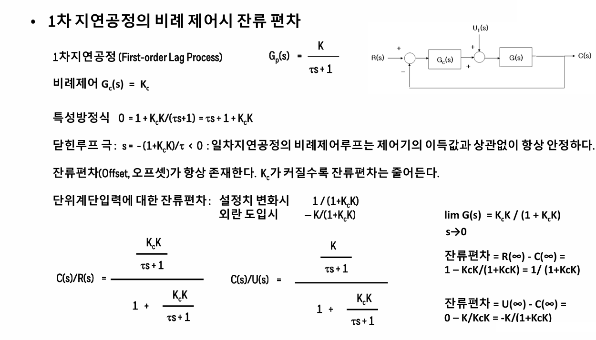
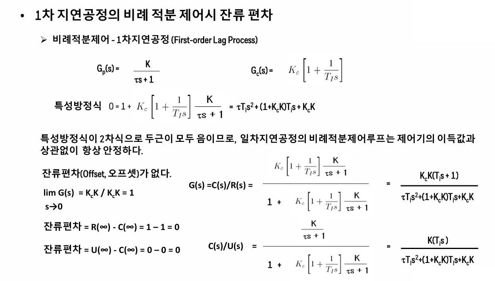
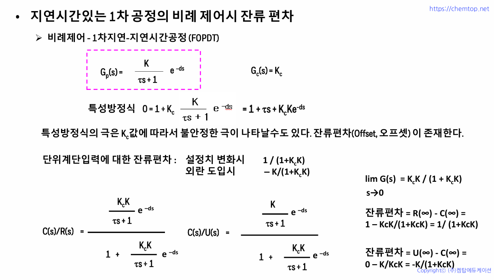
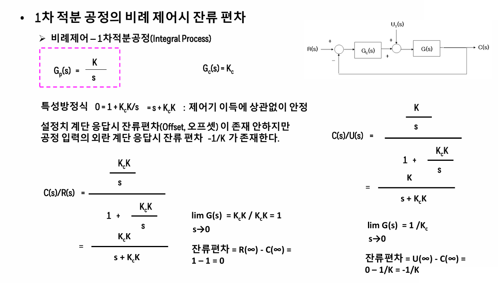
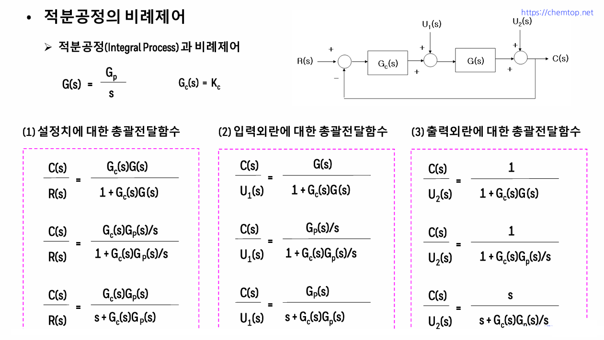
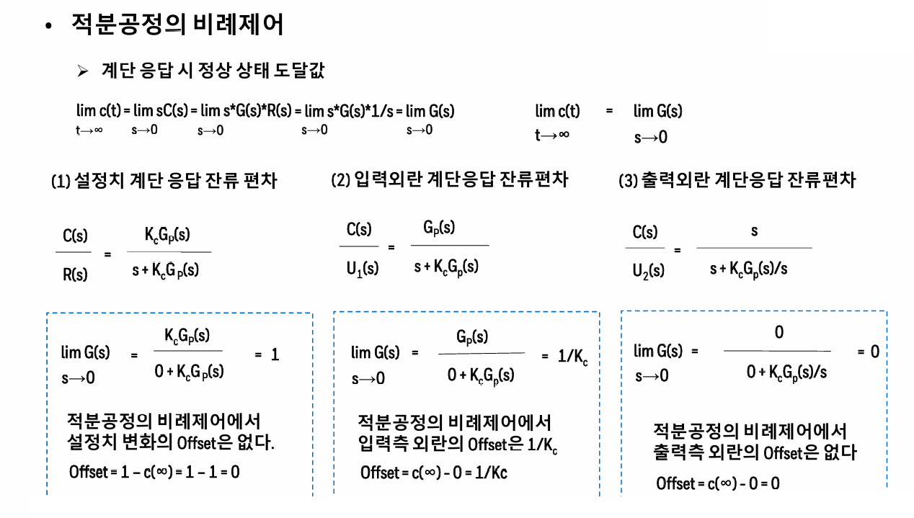
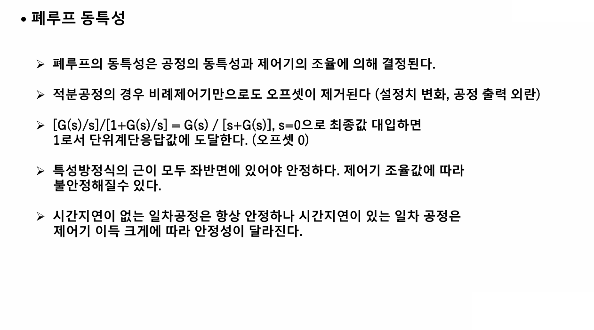

잔류편차계산
제어를 함에 있어서 비례제어를 쓰면 항상 잔류편차가 생기는데, 이게 얼마인가를 계산하는 것이다. 그럼으로서 이 잔류편차의 허용치를 설정하여 제어기를 설계할 수 있게 된다.
  

   
제어를 함에 있어서 비례제어를 쓰면 항상 잔류편차가 생기는데, 이게 얼마인가를 계산하는 것이다. 그럼으로서 이 잔류편차의 허용치를 설정하여 제어기를 설계할 수 있게 된다.
  

   